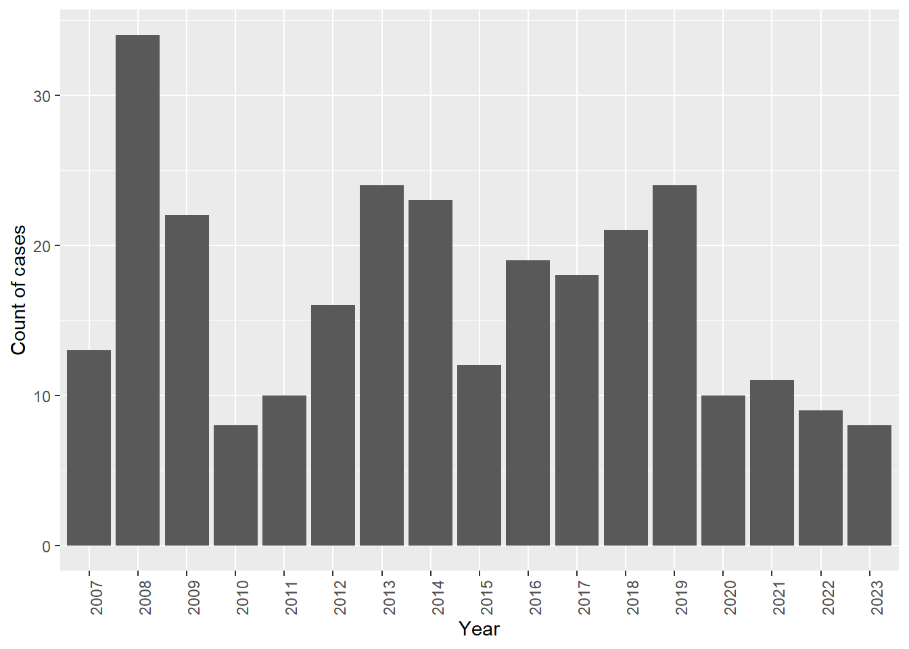

Bottlenose dolphins (Tursiops truncatus) kill harbor porpoises (Phocoena phocoena) in California.
William Keener Marc Webber Padraig Duignan Jackson Vanfleet-Brown
Introduction
- Harbor porpoise population conservation in Central California
Harbor porpoise (Phocoena phocoeana) populations in California have grown at rates of approximately 6-10% in the period since bycatch (2004), according to long term aerial surveys (wilkins2021?). Despite this growth, interannual variability in harbor porpoise strandings has caused concerns about new and emerging threats to these populations.
UME in 2009-2010 blunt force trauma
Forney et al. (forney2012?) reported on an elevated period of strandings, occurring between 2007-2009, that triggered the National Marine Fisheries Service to declare a harbor porpoise “unusual mortality event” (UME). They observed that death by blunt force trauma increased significantly from August to October in both 2008 and 2009 and considered interspecific aggression from bottlenose dolphins (Tursiops truncatus) to be the most likely cause of trauma in these cases.
Bottlenose dolphins - northward range expansion
Attacks by bottlenose dolphins on harbor porpoises were first documented in California (and the entire Pacific Ocean) by Cotter et al. (2012). It has also occurred in other regions worldwide revealing through an intensive observational study a connection between pathological evidence and observational study. However, bottlenose dolphins and harbor porpoises were not expected to have significant habitat range overlap for this to pose a significant threat, but in light of recent evidencve of a northward range expansion of bottlenose dolphins, however there is concern developing for a new and identified source of porpoise threats.
Need to continue monitoring causes and incidence of porpoise deaths to understand drivers of interspecific aggression and threats to porpoise conservation.
In this study we reviewed necropsies of harbor porpoises in the Central California Stranding network from the time of the UME reported by Wilkin et al. (2012) through to the present. The objective was to review the pathology reports to estimate the likelihood of fatality by bottlenose dolphins in each case, to investigate what proportion of fatalities could be driving this increase.
*New bullet point
This is how I will write it.
*Another
This is how I will write it.
Methods
- Stranding network
- range of search area and protocol for reporting and collecting carcasses
- Pathology
- process for necropsy and assessing TME data
- process for estimating probability
- Confirmed Case: Tt rakes + Fractures + Hemorrhage +/- Capture Myopathy
- Probable Case: Fractures + Hemorrhage +/- Capture Myopathy
- Suspect Case: Hemorrhage +/- Capture Myopathy
- Unlikely Case: Sudden death without blunt or sharp force trauma.
Results
Interannual view
As seen in Figure 1, the interannual range in strandings is 8 cases (2010) to 33 cases (2008), showing a strong increase coincident with the UME declaration, as well as a minimum in 2010 following the lifting of the UME. The proportion of high-likelihood cases seems to increase during the period from 2007 until peaking around 2018, which is depicted more visibly in Figure 2. In this we can see that high likelihood cases peak at about 40% of cases before waning again between peak and present.
Seasonal cycles
As can be seen in Figure 4 there is seasonal cycle in strandings, with most occurring in the summer months. The individual probabilities seems to also follow that seasonal pattern.

Spatial Data
Now looking at a map of the cases we can see that more cases have been suspect in the San Francisco Bay over time. Confirmed cases seem pretty well distributed.
Age demography of porpicides

References
Cotter, Mark P., Daniela Maldini, and Thomas A. Jefferson. 2012. “‘Porpicide’ in California: Killing of Harbor Porpoises ( Phocoena Phocoena ) by Coastal Bottlenose Dolphins ( Tursiops Truncatus ).” Marine Mammal Science 28 (1). https://doi.org/10.1111/j.1748-7692.2011.00474.x.
Wilkin, Sarah. 2012. “An Unusual Mortality Event of Harbor Porpoises (Phocoena Phocoena) Off Central California: Increase in Blunt Trauma Rather Than an Epizootic.” Aquatic Mammals 38 (3): 301–10. https://doi.org/10.1578/AM.38.3.2012.301.